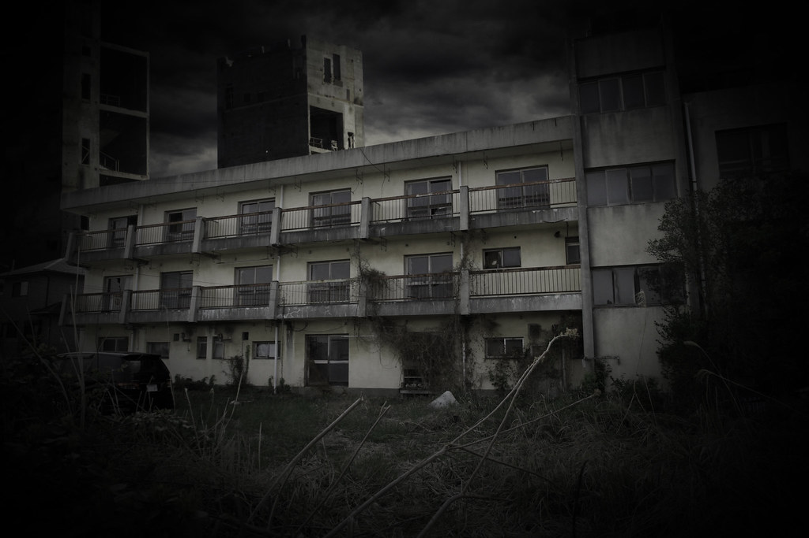

Treyton's place of origin is the city of Atlantis. You see, its not the magical lost city that legend spoke of, its an entire civilization oppressed by a powerful fascist government. The air is polluted, thick and heavy. The sky is red and grey from industrial factories and mining projects. Over-population and crime plague the vast slums of the city while the center of the city eat exotic meats and drink from chalices. The only thing special about this dystopia is that it is surprising the rest of the world doesn't expose its existence, then again how can they, the council of the city own much of the worlds trade systems, military power, and control valuable natural resources.
